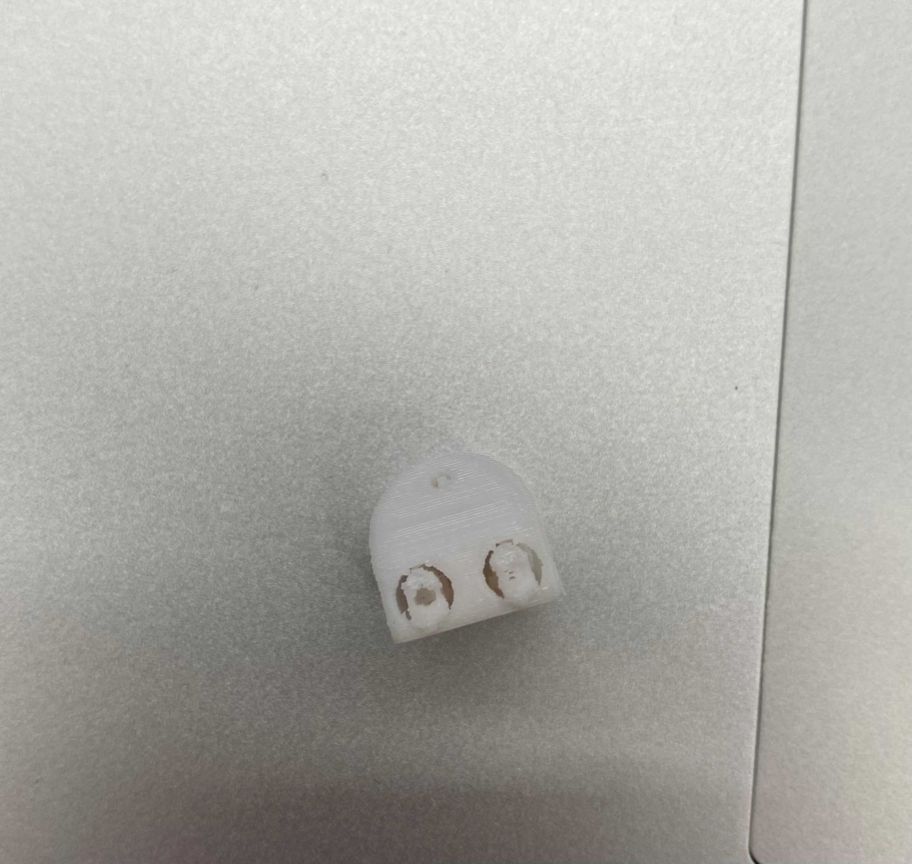

Project Note
概要・アイデアスケッチ

プロセス
5/29
役割分担と手の部分担当の人が試作
6/5

試作した手は形はしっかりしています。動かすためにワイヤーを通す必要があるのですが、
それを通す穴が本来とれるはずのもので塞がって開通の使用がない状態でした。

写真のようにサポートが本体と繋がっている状態です。
まずは開通させることが課題のようです。
6/12

サポートそのものを無くし、性能が前回より良い3Dプリンターを使うと写真のように綺麗に開通しました。

指に黒いゴム紐を通して指を固定してかつ閉じた状態から元に戻るようにしました。
さらにモーターが引っ張るためのテグスを通してみました。
手で試しに引っ張てみると結構な力が必要でテグスが切れる可能性が出てきました。
手の平のへこんでいる部分によって紐がかなり湾曲しているのも力が必要な原因の一つです。
6/19
モーターを動かすためのコード、13,16行目のi=50から3000の30秒に変更。
dfliinkのQRコードのためのコード
読み取るためにはdflink必須。来週は実際に動かす
6/26
実際に試してみたがモーター単体では動いて、QRコードを使うと反応はありませんでした。
手首より下の部分が出来上がりました。
7/3
arduinoの新しいコード
完成した片方の腕
先生の力を借りてモーターをまわしてみたが、全ての指を閉じることは力・回転不足で難しいと判断。ここで切り上げました。
7/10
dflink.pymain.py
serial_serch.py
試行錯誤して、この３っのファイルとdfリンクを使ってモーターを作動させることに成功したが、意図の通りに動かすことはどうしても難しく
見切りをつけて動画を取って終えた。
7/10-7/17
.png)
この期間に代表のwadashinさんがchatgptを使って正しいコードを作成、モーターを横にしてガムテープで本体を固定、開いたり閉じたりすることに成功。
このおかげで予定していた所まで完成しました。初めから使うべきでした。
正常に作動するmain.py
・main.pyのシリアルコードは使用するarduinoごとに変更
正常に作動するarduinoのコード
使ったもの
瞬間接着剤・ゴム紐・てぐす・ワイヤー・3dプリンタ・arduino・dflink・モーター
紹介動画
動画リンク
代表者 wadashin